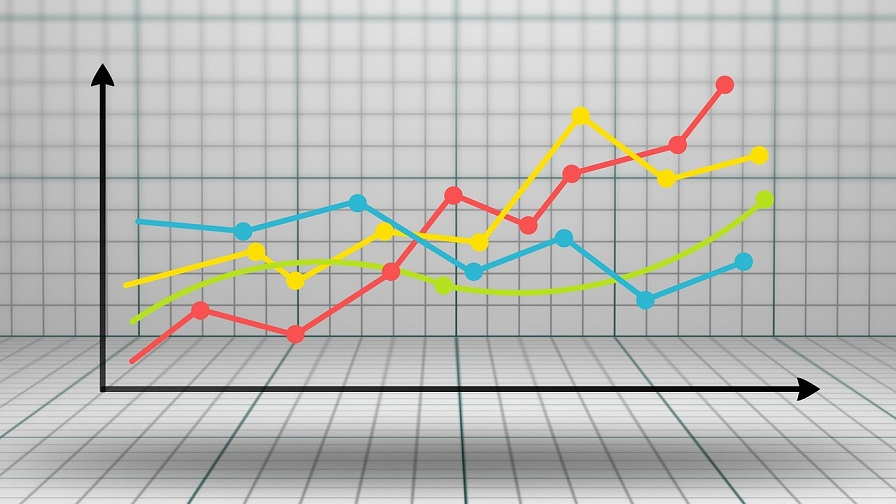

What is data analysis?
Data analysis is a process where the data is inspected, cleaned, transformed and modeled with the aim of extracting actionable knowledge. This knowledge can support the decision-making process in businesses. As a result, data analysis has become an essential tool for businesses to increase their competitive edge and improve operational efficiency.
With data analysis, data passes through the following phases:
- Inspected
- Cleaning
- Transforming
- Modeling
The results of the data modeling process are used to draw useful inferences, about the data, to help in business decision-making. These inferences can then be used to develop appropriate strategies to support business objectives.
Various data analysis tools are available to aid in examining datasets (collection of data) and draw conclusions about the information they contain.
- The data analysis tools help in
– Processing datasets
– Analyzing the relationships and correlations between datasets
– Identifying patterns and trends in the datasets
Some examples of data analysis tools: Python, R Programming, MATLAB, SaS and Java
R Programming:
- R is a programming language primarily suited for data analysis, statistical computing and statistical
- It is supported by the R Foundation
- It provides a large and integrated collection of tools for data
MATLAB:
- It stands for matrix
- It is a high-level programming language and interactive environment built for numerical computation, visualization, image processing and data analysis.
SaS:
- It stands for Statistical Analysis
- It is a statistical software suite built for data extraction, data transformation, and predictive and business
Java:
- Java provides APIs which can be used to perform data Tools like Rapidminer and Weka are built using Java.
Python:
Python is extensively used for creating scalable machine learning algorithms and is the most popular language for machine learning applications.
- Python offers ready-made frameworks that enable effective processing of large volumes of data.
- The following are the most commonly used Python libraries for data analysis and machine learning:
| Library | Description |
|---|---|
| NumPy | is a fundamental Python package for scientific computing. It extends the capabilities of the Python language by adding support for large, multidimensional arrays and matrices, along with a large collection of high-level mathematical functions to operate on these arrays. |
| Pandas | is a high-level Python library for data analysis and manipulation. It provides a wide range of powerful data structures and functions for working with structured and unstructured data. It is built on top of the NumPy library and provides an efficient and intuitive way to work with data. |
| SciPy | is a collection of numerical algorithms and mathematical tools for scientific computing in Python. It provides modules for optimization, integration, linear algebra, and statistics. SciPy also has a wide range of libraries for more specialized tasks such as image processing and signal processing. |
| Scikit-Learn | (formerly scikits.learn and also known as sklearn) is a free software machine learning library for the Python programming language. It features various classification, regression and clustering algorithms including support vector machines, random forests, gradient boosting, k-means and DBSCAN, and is designed to interoperate with the Python numerical and scientific libraries NumPy and SciPy. |
| Matplotlib | is a plotting library for the Python programming language and its numerical mathematics extension NumPy. It provides an object-oriented API for embedding plots into applications using general-purpose GUI toolkits like Tkinter, wxPython, Qt, or GTK+. |
Python libraries make it easy to implement machine learning techniques like classification, regression, recommendation systems, and clustering.
Python is the most popular ML language because:
- It is simple and consistent
- It has a wide offering of libraries and frameworks
- It is generally platform-independent
- It has a great community base
Types of Data Analysis
Text Analysis:
- Text analysis is also referred as text
- It is the process of extracting relevant information from unstructured textual
- It is used to transform raw text data into business
- Business intelligence tools are then used to take critical business decisions based on text
Statistical Analysis:
- It is a process of:
- Collecting
- Organizing
- Exploring
- Interpreting, and
- Presenting data using statistical techniques
- It allows businesses to make informed decisions considering specific information on the the current situations and the future This information will be in the form of results from statistical operations.
- There are two key types of statistical analysis:
- Descriptive Statistics
- Inferential Statistics
Descriptive Statistics:
- It is the process of statistical analysis where the dataset is summarized using two form of measures – measures of central tendency and measures of
Inferential Statistics
- The results of descriptive statistics can be used to draw inferences and make business Creating these predictions form the basis for inferential statistics.
- Two main forms of inferential statistics are - hypothesis testing and drawing generalizations about the broader population by applying statistics to smaller sample data.
Diagnostic Analysis:
- Diagnostic analysis aims to identify the causes of data being the way it The techniques associated with diagnostic analysis attempt to diagnose a potential problem, as characterized by the data, and determine causative factors using correlation and other statistical/analytical techniques.
- The results of this analysis can be used to pre-empt the occurrence of such problems elsewhere in the business process.
Predictive Analysis:
- Predictive analysis aims to predict future results by gleaning information from existing data or historical
- It is used to predict trends, behavior patterns of systems or customers, occurrence of bugs/errors/challenges and so
- Predictive analysis includes:
- data modelling
- artificial intelligence and machine learning
- data mining
Prescriptive Analysis :
- Prescriptive analysis takes predictive and diagnostic analysis one step further, by providing a set of actionable decisions to reach the required business goal, rather than simply providing a root cause analysis of a problem (diagnostic analysis), or predicting future outcomes (predictive analysis).
- The result of prescriptive analysis is a ‘prescription’ of recommended options we can take to reach a desired business outcome.
Phases in a Typical Data Analysis Process
Data Requirement Gathering:
- Here we describe the data analysis problem statement, the data we require for the analysis and the analysis procedures and techniques to be used in the data analysis
- It is analogous to a software requirements We determine the purpose of the analysis, what data will be analyzed, what analysis processes and methods will be employed, and what we anticipate the expected results to be.
Data Collection:
- Once we determine the data we need, we will have to obtain The data collection step involves collecting data from various sources ranging from organizational databases, survey responses, unstructured text data on websites and other platforms, and so on.
Data Cleaning
- Data collected for the analysis may contain duplicate records, whitespaces, or errors and The data should be cleaned and made error-free before it can be subjected to any analysis.
- There are multiple ways of cleaning data depending on whether the data is missing or
Missing Data: When some attributes in a record is missing. This is illustrated as blank spaces in the dataset. We can:
- Ignore the entire record where there are missing attribute fields
- Fill the missing There are multiple ways this can be done. One example is to employ measures of central tendency like mean or median, where the blank attribute is filled with the mean/median of all values in the attribute column.
Noisy Data: This is data that contains errors or outliers. Such data is generated due to faulty data collection, data entry error, damaged sensors, and so on.
There are different ways to handle the noisy data. They are
- Binning Method
- Regression
- Clustering
Data Transformation: Data cleaning falls under the ambit of data pre-processing, along with data transformation. Data transformation involves converting raw data into a form where it can be effectively used in data analysis. For example, data using different scales of measurement will need to be ‘normalized’ so that some columns do not have undue influence over the results, which leads to biased outcomes. Or we will need to choose only those attributes which are pertinent to the analysis, and remove those which are not. Continuous data (like temperature fluctuations) may need to be discretized so that it can be recorded in easily manageable number of records. To summarize, some of the methods of data transformation are:
- Normalization
- Attribute Selection
- Discretization
Data Analysis
- Data analysis can then be performed on the preprocessed This involves the application of various statistical techniques to the data.
- The process of data analysis through the application of data analysis tools help us understand the data, interpret the analysis results and make conclusions regarding effective business.
Data Interpretation:
- The data analysis results will then have to be interpreted in order to draw actionable
- In order to aid the process of data analysis interpretation, we can implement various data visualization methods.
Data Visualization:
- Data visualization involves the graphical representation of either the preprocessed data, or the results of the data analysis Therefore, this phase can effectively fall before the interpretation phase in the data analysis process.
- Graphical representation of data or analysis results makes it easier to convey findings and inferences to decision-makers or other audience targets of the analysis.